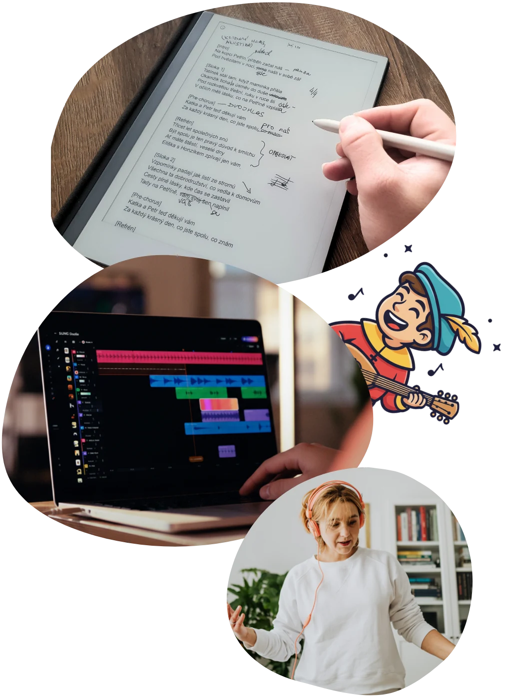

Profi textař
Srdcem písničky je text - musí být lidský a kreativní. Proto jej tvoří zkušený textař, ne AI.
Vy dirigujete, textař ladí, technologie komponuje. Vznikne písnička od srdce, která vydá za tisíc slov.

Srdcem písničky je text - musí být lidský a kreativní. Proto jej tvoří zkušený textař, ne AI.
Díky pokročilým hudebním modelům dáme textu zvučný hlas. Pečlivě ladíme.
Drobnosti doladíme. A pokud vážně nebudete spokojení, vrátíme vám peníze.

Písnička musí vyprávět váš příběh. Vždy hledáme osobní detail a ladíme slova tak, aby písnička patřila konkrétnímu člověku.
Popíšete, o čem má písnička být a v jakém stylu. Čím víc detailů, tím lépe.
Hledáme správná slova. Upravujeme. Skládáme, tvoříme a mixujeme. Člověk a technologie pracují ruku v ruce.
Ozveme se hned, jak práci dokončíme. V e-mailu najdete odkaz na osobní stránku se stažením i přehráváním.
Překvapí, rozesmějí, rozpláčou. Od rockera po milovníka dechovky.
Kytka zvadne, ale písnička zůstane. Na oslavě všem vyrazí dech.
Poděkujte, vyznejte lásku, potěšte. Písnička řekne i to, co vy nedokážete.
Potěšte malého oslavence, nebo darujte písničku větším dětem - ve stylu, který mají rádi.
Na promoční den, rozlučku, narození dítěte nebo třeba oznámení svatby.
Dvě varianty, kdy písničku tvoříme za vás. A jedna lehčí cesta, kde si text napíšete s průvodcem sami.
PÍSNIČKA NA MÍRU
Text vzniká ve spolupráci zkušeného textaře a AI. Výsledkem je osobní písnička, která vychází z vašeho příběhu.
PÍSNIČKA NA MÍRU
Pro ty, kteří chtějí vlastní písničku s maximální péčí. Včetně osobní konzultace s textařem.
Tvořte sami
Napište svou písničku s pomocí AI průvodce a koncept upravte podle sebe.
„Perfektní písnička. Úplně vystihla co jsem měla na srdci. Děkuji! Oceňuji i rychlost dodání. Večer jsem zadala a druhý den dopoledne už měla hotovo.“
„Díky za moc pěknou písničku, líbila se všem známým, kterým jsem to poslal, nebo přehrál.“
„Písnička předčila naše očekávání, vehnala slzy do očí a pouštíme si jí doma pravidelně :-) Moc děkuji za bleskovou a milou komunikaci s panem textařem.“
„Úplně mi spadla brada, jakou pecku vytvořili. Vtipné, mé požadavky vkusně zakomponovány. Komunikace výborná, skladba hotová za pár dnů a ještě možnost jedné úpravy.“
„Díky písni, kterou jsme tátovi pustili a zároveň zpívali, se oslava stala peckou. Táta zpíval, plakal, smál se a všichni ostatní hosté vpluli na parket a bouřlivě tleskali. Moc Bardio děkuji.“
Reference pocházejí od skutečných zákazníků z Google profilu, Facebook recenzí i e-mailové komunikace.
Jednáme fér. Odpovídáme na otázky, které vás zajímají.
Víme a aktivity dalších tvůrců podporujeme. Chtěli jsme ale hudbu na míru zpřístupnit i těm, kteří nechtějí věnovat dlouhé hodiny zkoušení, přepisování a experimentování s AI. Přidanou hodnotou Bardio je práce textaře: člověka, který má cit pro příběh, rytmus, přirozený jazyk, rýmy i pointu. Ve variantě STANDARD textař vede a upravuje text vznikající s podporou AI. Ve variantě PREMIUM píše text písně celý textař.
Písničky negenerujeme na kliknutí. Příprava zadání, textařská práce, výběr hudebního směru a ladění výsledku zaberou čas. Hotové písničky ve variantách STANDARD i PREMIUM dodáváme do 3 pracovních dnů od zaplacení a dodání kompletních podkladů. U PREMIUM se lhůta počítá od osobní konzultace nebo odsouhlasení zadání, podle toho, co nastane později.
Ano, možnosti jsou široké. Stačí vybrat primární styl a případně žánr blíže specifikovat. Uvést můžete i interprety, kapely nebo náladu, která se vám líbí. Konkrétního interpreta ale nenapodobujeme. Textař a hudební zadání společně drží směr tak, aby výsledek seděl k příběhu, adresátovi i příležitosti.
Pokud vám hotová písnička nesedne, ozvěte se nám do 72 hodin od doručení. Napište číslo objednávky a pár vět k tomu, co konkrétně není ono. V rámci garance spokojenosti máte možnost jedné přiměřené úpravy textu nebo hudby v rozsahu původního zadání. Když úprava nedává smysl nebo opravdu nejste spokojení, vrátíme peníze. Podrobnosti najdete na stránce Garance spokojenosti.
Rádi. Při práci s textem používáme podle potřeby i nástroje jako ChatGPT, Claude nebo Gemini, ale rozhodující je textařský výběr, přepis a finální ladění. Na zhudebnění využíváme pokročilé hudební AI modely a v PREMIUM variantě přidáváme ruční úpravy. Technologie bereme jako nástroj, ne jako náhradu člověka.
Standardně dodáváme MP3 ve vysoké kvalitě. Soubor pošleme přes odkaz na personalizovanou webovou stránku, kde si písničku můžete přehrát nebo stáhnout. Stránka zůstává aktivní alespoň 30 dnů od doručení a můžete ji nasdílet i ostatním.
S projektem Bardio přišel Radek Brázdil, copywriter, kreativec a nadšenec do technologií. Nejdřív tvořil písničky pro vlastní děti, teď je pomáhá tvořit pro ostatní. Prací s textem se živí přes 15 let. Na tvorbě se podle potřeby podílejí i další textaři a tvůrci, kteří do procesu zapojují nástroje umělé inteligence.
Napište nám pár slov o člověku, kterého chcete překvapit. Zbytek už doladíme spolu.
Začít objednávku